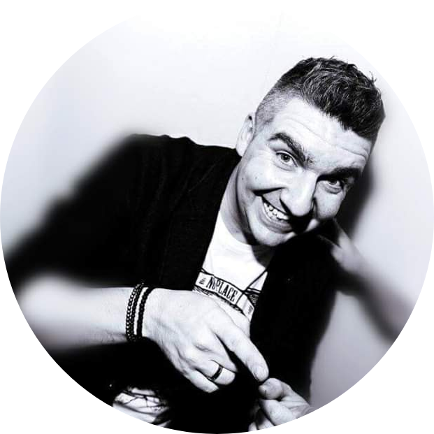

|  | DJ Artur KeyInternational DJ with 17 years of Experience Artur Key- Artur Key - Artur Kazhdan Was born in Ukraine, now lives in Israel. I began the career in 2004. The love to music since the childhood, led to a choice to follow a musical way on life. The musical directions - House, Electro, Progressive. During the work I stood in the booths of the main clubs of Israel and as carried out a set of celebrations and the VIP of parties over all country. Today continues to work in clubs and actively is engaged in the organization and a foresight of celebrations and the VIP of parties in Israel, has a weekly podcast with all novelties of club music. |
| Croud Reading 🌟🌟🌟🌟🌟 | Music Knowlage 🌟🌟🌟🌟🌟 |
| Mixing 🌟🌟🌟🌟🌟 | Scraching 🌟🌟 |
CONTACT ME HERE